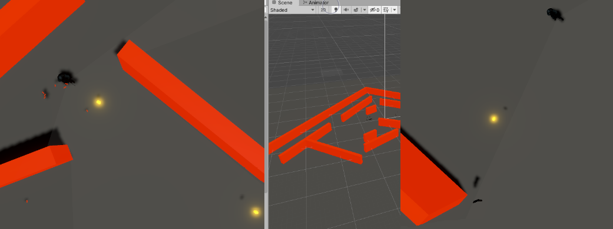

Top Down Shooter Game

My first major Unity project which I started working on back in 2019. I had long been thinking about making a top down shooter type game in a 3D setting. The idea was for the game to eventually be
turned into a networked multiplayer experience, where players could either work together or against each other in various levels but the project never got that far.
As this was my first independent project, there was plenty of trial and error involved, as well as following various youtube tutorials. In particular, I looked at tutorials for the top down type camera, the basic movement
and shooting projectiles. It spent quite a bit of time fine tuning the movement and controls until I found it felt responsive but not too quick in allowing the player to switch movement
direction. I wanted to emulate the movement from the game “Hotline miami” where the player character can move and change directions quickly, but not instantly which added another layer of skill in that the
player needed to predict how their character would move and move accordingly. In order to get the movement just right I went back and forth between the various options used in Unity (namely the character
controller, a rigidbody with forces applied and direct transform movement).
During this project I also first wrote the script for the camera controls (using the previously referenced video as a starting point)
variations of which I have used in several different projects since. While working on this project I also got to try 3D character animation and rigging for the first time. I took some premade 3D characters from
the Mixamo Website and set up the animation rig/movement in the Unity game engine. After setting up the animations, I also got them working correctly through a script I wrote which made it so that the characters
would move appropriately to their movement direction/speed using a Unity blend tree.